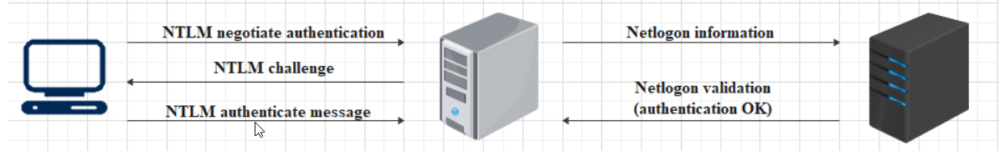
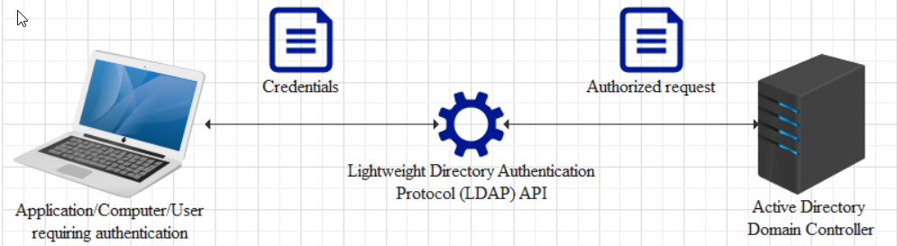
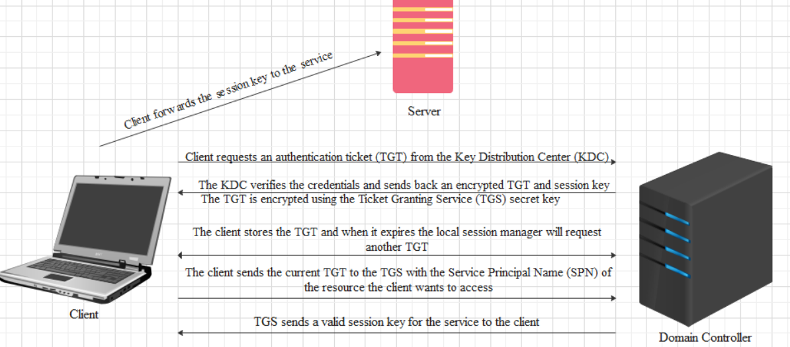
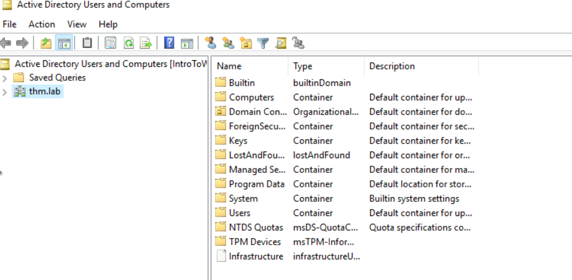
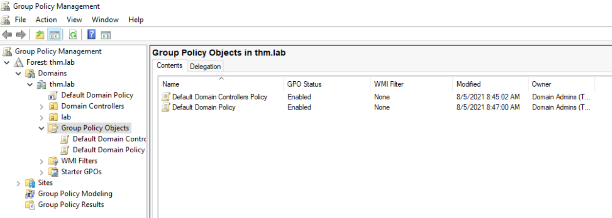

Windows File System and PermissionsUnderstanding the authentication ProcessLocal AuthenticationOn-Premise Active Directory (AD)Azure Active Directory (AAD)Utility ToolsTypes of ServersUsers and Group ManagementCreating your first Group Policy Objects (GPO)
TryHackMe Windows
| Windows Versions | Windows Server Version |
|---|---|
| Windows 1 | Windows Server 2003 |
| Windows 2 | Windows Server 2008 |
| Windows 2.x | Windows Server 2012 / 2012 R2 |
| Windows 3.x | Windows Server 2016 |
| Windows 95 | Windows Server 2019 |
| Windows 98 | |
| Windows NT | |
| Windows XP | |
| Windows Vista | |
| Windows 7 | |
| Windows 8.x | |
| Windows 10 | |
| Windows 11 |
The method of keeping track of files on a disk or partition
Windows file system structure
| Folders on C drive | Roles |
|---|---|
| PerfLogs | stores the system issues and other reports regarding performance |
| Program files + (x86) | Programs install default location |
| Users | Users stored data. Stores users generated data. Saving a file on your desktop |
| Windows | contains the code to run the OS and some utility tools |
Permissions
File permissions can be set by an administrator or a privileged account. permissions can be applied to Users and Groups
| Permission | Access |
|---|---|
| Full control | allows the user(s)/group(s) to set the ownership of the folder, set permission for others, modify, read, write, and execute files |
| Modify | allows the user(s)/group(s) to modify, read, write, and execute files. |
| Read & Execute | allows the user(s)/group(s) to read and execute files. |
| List folders content | allows the user(s)/group(s) to list the contents (files, subfolders, etc) of a folder. |
| Read | only allows the user(s)/group(s) to read files |
| Write | allows the user(s)/group(s) to write data to the specified folder (automatically set when "Modify" right is checked) |
Set permissions by right clicking on a file/folder and select properties and go to the security tab and edit when complete click apply
You can use the tool icacls to check files/folder permissions
Use icacls on its own to get help
Set permissions icacls <folder/file> /setowner Users
Verifying the identity of a person(object,service)
Local Security Authority (LSA). used to protect the subsystem that keeps track of security policies and the accounts that are on a computer (local)system.
Active Directory
Two Types
has a record of all users, PCs, and Servers and authenticates the users signing in (the network login). Once signed in, Active Directory also governs what the users have access.
| Protocol | Description |
|---|---|
| NTLM/NTLM 2 | uses challenge-response sequence of messages between a client and a server system. Does not provide data integrity/confidentiality |
|  | |
| LDAP/LDAPS(supports encryption) | the user's workstation sends the credentials using an API to the Domain Controller in order to validate them and log in |
|  | |
| KERBEROS | uses symmetric-key cryptography and requires trusted third-party authorization to verify user identities. |
|  |
secure online (cloud based) authentication store, which contain users and groups. Users have username and password which are used when you sign into an application.
| Methods | Description |
|---|---|
| SAML (Security Assertion Markup Language) | Single Sign-On (SSO). Defines a set of rules/protocols that allow users to access web applications with a single login. Possible due to the service providers trust the systems that verify the users identity (identity provider) |
| Service Providers: Systems and Apps that the users access Identity Providers: the system that performs user authentication | |
| OAUTH 2.0 | apps use to provide client applications with access. Four Roles: |
| The authorization server, which is the server that issues the access token. | |
| The resource owner, normally your application's end-user, that grants permission to access the resource server with an access token. | |
| The client, which is the application that requests the access token, and then passes it to the resource server. | |
| The resource server, which accepts the access token and must verify that it is valid. In this case, this is your application. | |
| OpenID Connect | authentication standard built on top of OAuth 2.0. It add an additional token called and ID token. uses simple JSON web tokens (JWT). OIDC is all about user authentication |
| Built-in utility Tool | Description |
|---|---|
| Computer Management | |
| Task Scheduler | predefined actions to be automatically executed. Set date and time of a service/script to be ran |
| Event Viewer | logs events that happen across the device. i can be used to forward events to SIEM (Security Information and Event Manager) |
| Shared Folders | a shared file/folder that can be accessed by multiple users |
| Local users & computers | create users, add them to groups, and can be given different levels of access |
| Performance Monitor | monitors the different activities across the device such as CPU, memory, etc. |
| Disk Management | shrink, extend, and create new partitions and format the partitions |
| Services & Applications | check running services on the system. start, stop, or restart them |
| Local Security Policy | group of settings that you can configure to strengthen the computers security. Minimum pass length, pass complexity level, disable guest and local admin accounts. |
| Disk Cleanup | delete files that are no longer needed by the system. |
| Registry Editor | stores important OS system settings. double clicking, taskbar settings, Windows Key + R and type RegEdit |
| Command-line Tools | CMDPowershellWindows Terminal(microsoft store) |
| Registry Editor (Regedit) | a database that contains low-level settings for windows settings and applications. |
| HKEY_CLASSES_ROOT HKEY_CURRENT_USER HKEY_LOCAL_MACHINE HKEY_USERS HKEY_CURRENT_CONFIG |
hardware or software equipment that provides functionality for other software's or devices
| Server | Description |
|---|---|
| Domain Controller | Most important, AD or AAD infrastructure we can control users, groups, restrict actions, improve security, and many more of other computers and servers. |
| File Server | share files across devices on a network. |
| Web Server | serves static or dynamic content to a Web browser by loading a file from a disk and serving it across the network to a user’s Web browser |
| FTP Server | moving one or more files securely between computers while providing file security and organization as well as transfer control |
| Mail Server | move and store mail over corporate networks (via LANs and WANs) and across the Internet |
| Database Server | computer system that provides other computers with services related to accessing and retrieving data from one or multiple databases |
| Proxy Server | usually sits between a client program and an external server to filter requests, improve performance, and share connections |
| Application Server | usually used to connect the database servers and the users |
In Active Directory user management is done using Active Directory Users and Computers.
Tools > Active Directory Users and Computers

Advanced Features - add additional features when looking at an object View > Advanced Features
Create an Organizational Unit (OU) where to store the users. right click domain name New > Organizational Unit
Create new users right click New > User fill out contact card create login and password
Create new group right click New > Group (an object can be a member of another object (group can be a member of another group))
Assign a user to a group right click on the user Add to group
A feature of Active Directory that adds additional controls to user accounts and computers. Includes local settings, site-wide, domain-level, and settings applied to organizational units.
Create GPO Tools > Group Policy Managment

Right click Group Policy Objects new object > name then right click edit
Set accesses Policies > Windows Settings > Security Settings > Local Policies > Users Right Assignment
choose rights, "Define these policy settings", add user or group
Link the GPO to the root of the domain right-click on Domain Controllers OU > Link an existing GPO and select the GPO you created
To apply the GPO open CMD as administrator and type gpupdate /force
test by trying to access services/protocols with different users